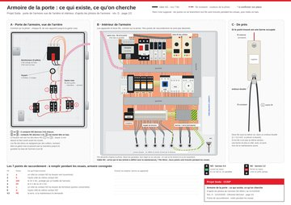
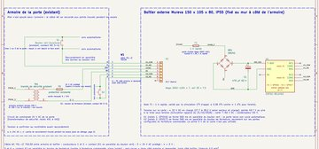
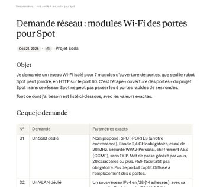

Documents techniques
Tout télécharger · 2,0 Mo-

Armoire électrique de la porte
Porte vue de l'arrière et intérieur, redessinés d'après les photos avec leurs fils existants. Tableau des 7 points de raccordement à remplir pendant les essais.
-
Plan de câblage du boîtier
Boîtier vu de face, couvercle retiré : bornier X2, fusible F1, redresseur, carte ESP32-RELAY02, chaque fil borne à borne.
-

Schéma électrique KiCad, rév. E
Raccordement dans l'armoire (S1, S2), câble W1, bornier X2, F1, pont GBU4G, condensateur 470 µF, carte (K1, K2). Netlist vérifiée.
Demande à l'informatique
- D1SSID dédié2,4 GHz, canal 20 MHz, WPA2-Personal AES, sans portail captif
- D2VLAN dédiésous-réseau IPv4 en /28 avec passerelle, hors des plages internes de Spot
- D3DHCP, 7 réservationsune adresse fixe par module, P01 à P07, réservée par adresse MAC
- D4Adresse fixe pour Spotréservation de l'interface Wi-Fi du robot
- D5Règles de fluxSpot et mon PC vers les modules en TCP 80 et ICMP ; tout le reste interdit
- D6Accès de mon PCvers les modules en TCP 80 et ICMP, pour la programmation et les essais
- D7Inventaireinscription des 7 équipements

Rien d'autre : pas d'internet, pas de DNS, pas de NTP, aucun changement sur le réseau actuel de Spot.
Demande complète · PDF287 KoListe d'achat
Excel15 Ko| Article | Référence | Prix du lot | Lots | Total HT |
|---|---|---|---|---|
| Module de porte | 236,80 € | |||
| Carte Seeit ESP32-RELAY02 (Wi-Fi, 2 relais)Reçoit les ordres de Spot par le Wi-Fi : relais K1 = ouverture, relais K2 = fermeture (portes sans fermeture automatique) | RS 286-3995à l'unité | 27,20 € | 7 | 190,40 € |
| Câble FTDI TTL-232R-3V3 (USB vers série 3,3 V)Programmer et configurer les cartes | RS 429-307à l'unité | 23,20 € | 2 | 46,40 € |
| Entretoises nylon M3 et vis (assortiment)Fixer la carte au fond de la boîte (4 par carte, 10 mm) | Amazon à choisirassortiment | à relever | 1 | — |
| Boîtier externe | 294,69 € | |||
| Boîte Mureva 150 x 105 x 80, IP55Boîtier du module, fixé au mur à côté de l'armoire | Rexel SCHENN05087à l'unité | 24,96 € | 6 | 149,76 € |
| Rail DIN 35 x 7,5 mm perforé, barre de 1 mSupport des bornes : un tronçon de 6 cm vertical par boîte | RS 467-416paquet de 4 barres | 27,13 € | 1 | 27,13 € |
| Borne à ressort Wago 2002-1201, 2,5 mm²X2.1-X2.2 contact K1 (ouverture), X2.3-X2.4 24 V AC, X2.5-X2.6 contact K2 (fermeture), X2.7 réserve | RS 507-6535paquet de 10 | 9,34 € | 4 | 37,36 € |
| Borne porte-fusible Wago 2002-1611 (fusible 5 x 20)F1 : protège le 24 V AC pris dans l'armoire | RS 758-1705paquet de 10 | 49,29 € | 1 | 49,29 € |
| Fusible 5 x 20 mm 1 A rapideFusible de F1 | RS 630-826boîte de 10 | 5,76 € | 1 | 5,76 € |
| Plaque d'extrémité Wago 2002-1291Ferme le côté ouvert de la dernière borne | Rexel WAG2002-1291à l'unité | à relever | 6 | — |
| Butée d'arrêt Wago 249-116Bloque la rangée de bornes sur le rail | RS 796-0460paquet de 5 | 4,31 € | 3 | 12,93 € |
| Presse-étoupe M16 IP68 nylon, câble Ø 5 à 10 mmEntrée du câble dans la boîte (1 utilisé, 1 réserve) | RS 214-1064sachet de 10 | 6,23 € | 2 | 12,46 € |
| Alimentation de la carte | 23,86 € | |||
| Pont redresseur onsemi GBU4G (400 V, 4 A)Transforme le 24 V AC de l'armoire en continu | RS 806-7121tube de 20 | 17,66 € | 1 | 17,66 € |
| Condensateur 470 µF 63 V radial 105 °CLisse la tension redressée | RS 711-1615sachet de 10 | 6,20 € | 1 | 6,20 € |
| Plaque à bandes (veroboard)Support du pont et du condensateur | Amazon à choisirplaque | à relever | 1 | — |
| Liaison avec l'armoire | 45,10 € | |||
| Câble souple YSL-JZ 7G0,50Fils 1-2 contact K1 (ouverture), 3-4 24 V AC, 5-6 contact K2 (fermeture), vert-jaune terre | Rexel FILYSLJZ7G0,5TGLau mètre | 1,26 € | 20 | 25,20 € |
| Presse-étoupe M20 IP68 nylonEntrée du câble dans l'armoire de la porte | RS 669-4664sachet de 5 | 7,05 € | 2 | 14,10 € |
| Embouts de câblage isolés 0,5 mm²Sertis sur chaque fil | RS 178-7287sachet de 100 | 2,90 € | 2 | 5,80 € |
| Total à commander | 600,45 € | |||
3 petits prix restent à relever (Entretoises nylon M3 et vis, Plaque d'extrémité Wago 2002-1291, Plaque à bandes) : quelques euros au total. Les cartes ont un délai annoncé de 90 jours : à commander en premier.
Seulement si nécessaire
- Routeur de voyage TP-Link TL-WR902AC · RS 286-4650 · 91,65 € HT. Réseau Wi-Fi de test si l'informatique ne donne pas d'accès à temps.
- Clé Wi-Fi USB TP-Link Archer T2U Plus · RS 255-8427 · 32,79 € HT. Relier le CORE I/O au réseau de test.
- Foret étagé 6 à 30,5 mm · RS 399-0934 · 78,80 € HT. Percer l'armoire s'il n'y a pas d'entrée libre.
- Redresseur rail DIN Zander Aachen 456100 · RS 562-114 · 61,70 € HT. Variante industrielle du pont redresseur.
- Alimentation Mean Well HDR-15-24 · RS 145-7862 · 18,93 € HT. Si le transformateur de l'armoire est trop chargé.